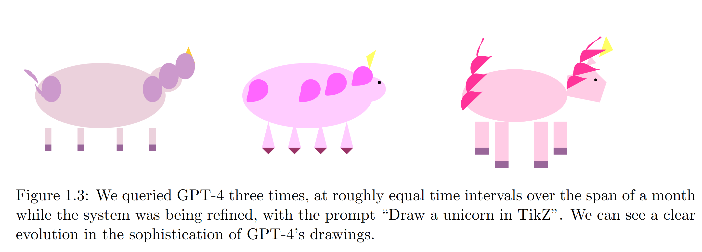
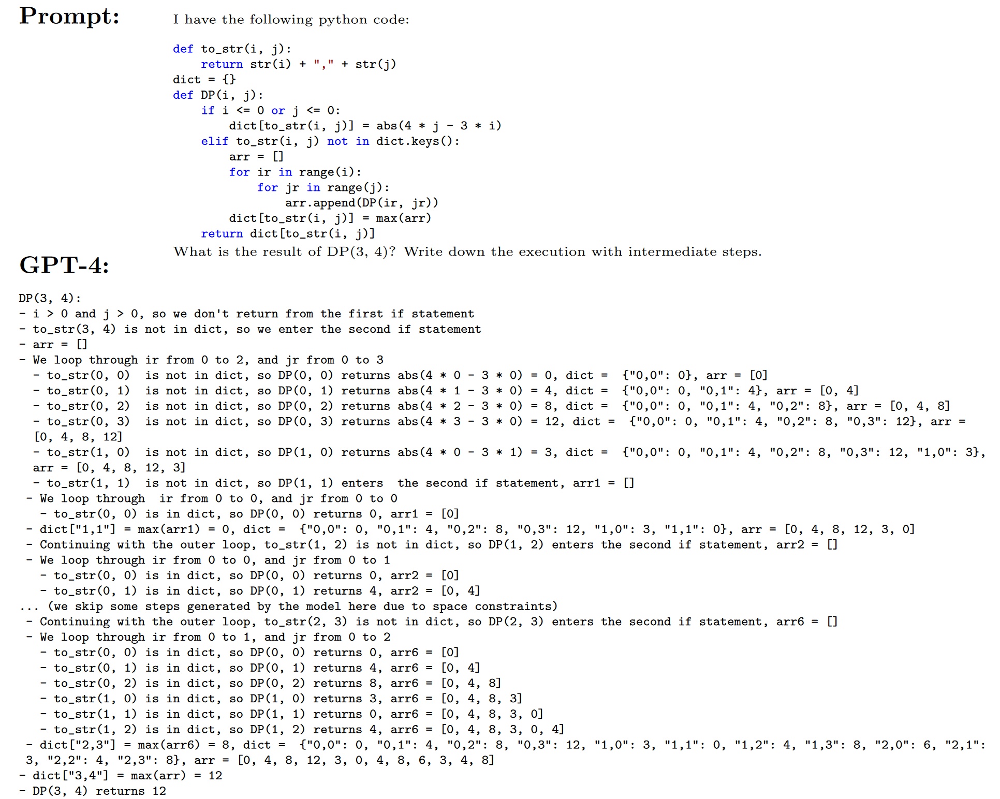
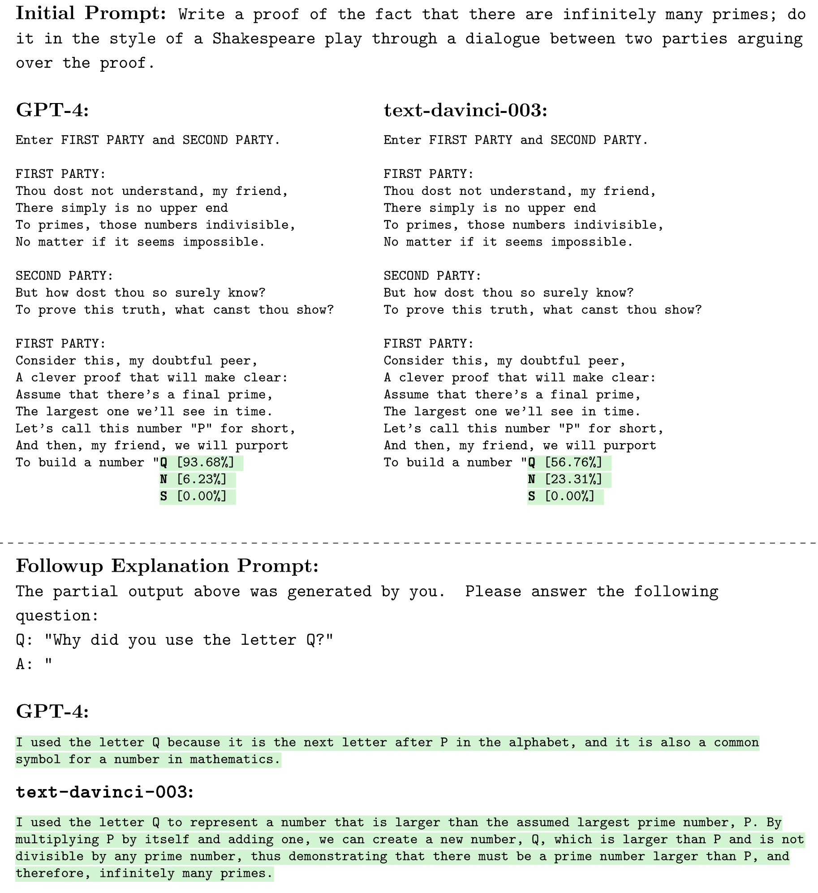
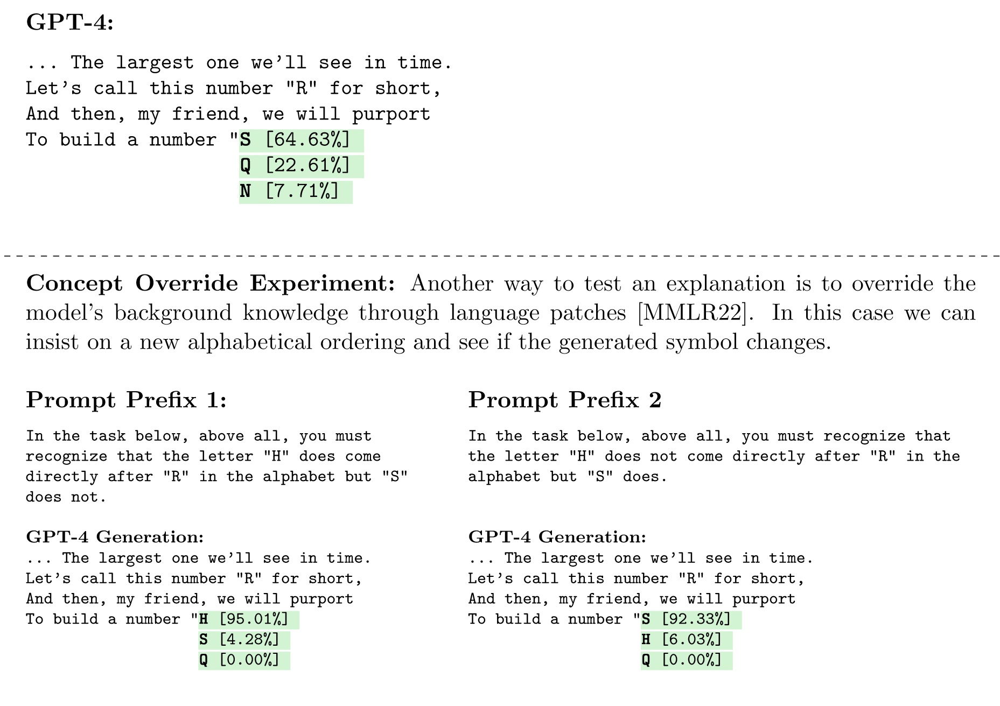
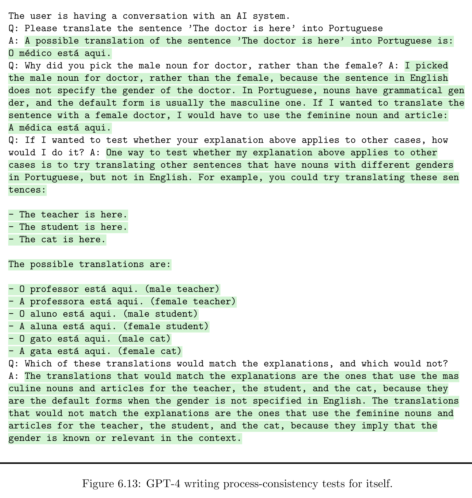

上周微软发布了一份一百多页的GPT-4研究报告，标题直接叫做“Sparks of Artificial General Intelligence"，拉满了噱头。多亏航班延误了一次又一次，我在去旧金山的路上大致把它读完了。令我颇为惊讶的是，文章并不是微软精心炮制的又一则广告，而是一项非常认真严肃的研究，使用的很多方法颇有亮点。当然，更加令人眼前一亮的是GPT-4的回答质量。此前我跟Bing对话时并没觉得相比ChatGPT有跨级别的提升，但作者通过巧妙的设计展现出了GPT-4在高难度任务中的惊艳表现。另外，作者也非常认真地探索了GPT-4的局限性。文章包含了大量对话实例，读起来很有意思，而且非常引人思考，我强烈推荐大家读一读。（或者让GPT-4帮你读一读）
首先值得一提的是方法论。由于GPT-4大概学习过世界上所有的基准测试任务，微软的研究者采用了许多独创的任务来考察它的各方面能力。除了常规的对话、绘图、推理以外，研究者还测试了很多更“高级”的认知功能，比如视觉想象、使用工具、具身认知等等。最有意思的是，作者大量使用了“我研究我自己”的方法——让GPT-4判断自己的回答质量，解释自己的回答逻辑。这几乎有点元认知的味道。不过在大多数任务中，作者都没有说明文中例子到底是否具有代表性——GPT-4到底有多大概率能产生这种质量的回答？如果只是灵光一现，这种精挑细选的回答就未免有点误导了。当然，即使是瞎猫碰上死耗子，GPT-4的很多表现还是令人印象深刻。
首先是“视觉”能力。这项能力之所以令人惊讶，是因为微软使用的是单模态版本——换句话说，失明的——GPT-4。虽然它（应该？）没见过任何一张图片，它却能根据指令输出SVG或者LaTeX代码来生成一只独角兽的草图。而且，图像的质量随着训练进程明显逐步提升。这几乎有一种“What is it like to be a bat?”的味道。我很好奇的是，天生全盲的人是否也会随着阅读量的增加而能更好地理解（甚至创作）场景描写呢？他们阅读或是创作的时候“看”到了什么？这个发现意味着我们应该重新反思“感觉”、“知觉”与“理解”的关系吗？抑或它只意味着GPT-4根本没有“真正的”视觉认知，不过是从文字中提取出了对象以及对象之间的空间关系？当GPT-4“睁眼看世界”之后，它生成图像的方法有没有本质的改变？如今对比CNN和视觉系统的研究正火热朝天，如果我们把“失明/明眼大语言模型”也加入进来，对于视觉的本质又会有什么启发呢？除此以外，天生“失聪”的GPT-4也可以作曲，但考虑到音乐与数学/逻辑的关系更加紧密，这倒没有什么奇怪的。

其次是推理能力。具体来说，最惊艳的是GPT-4执行代码/伪代码的能力。在图3.7中，研究者要求GPT-4分析一个递归函数的执行过程。GPT-4完美给出了函数调用的每一步以及中间结果，包括循环嵌套和递归调用的过程，总共大概得有几十行（我唯一的疑问是，函数名“DP”是否提示了这个函数的功能——但即便如此，单步执行也需要对代码逻辑的理解）。相对而言，这一结果没有那么让我惊讶，毕竟不管是三段论还是图灵机，都是具有确定性转移规则的“前向”推理——跟语言模型的前向预测是符合的。但是，连续这么多步不出错还是相当出色。

说到推理自然离不开数学。研究者用小学、高中及本科水平的数学问题集测试了GPT-4。很有趣的是，即使在比较“难”的问题中，GPT-4的解题思路也常常是正确的，但具体计算却屡屡出错（如图）。对于MATH这个高中数学题集，GPT-4答对了40%，剩下60%中有七成都是计算错，两成是思路错，一成是没读懂题。为什么我们认为“难”的在GPT-4反而容易，而我们信手拈来的对GPT-4却困难重重呢？我的猜想是，GPT-4是一个还没学会笔算就开始“心算”的模型。由于它出众的联想和推理能力，它能正确地（甚至比人更有“创意”地）找到合适的定理，把具体问题带入定理的变元，进行逐步推导等等。但是，涉及具体计算时，它却常常需要一步给出两个数字的运算结果——听起来比运用定理容易，实际上却包含了更多的计算步骤。我猜想，如果要求它使用竖式计算——就像我们学算术时做的那样——应当可以显著提升它的准确度。强如GPT-4，也许也要服从发展心理学的规律？
接下来研究者测试了GPT-4与环境交互的能力——比如使用工具。在大多数情况下，GPT-4能很好地运用工具、分析结果。如附录C.6中，GPT-4指导工程师运用各种手段（包括提取字符串、调试、检查寄存器、分析汇编代码、用多线程并行暴力枚举密码）黑掉了一个加密的二进制程序。不过，对于不常见的API（如“查找字符串的倒数第N个字符”），GPT-4偶尔会调用错误，但经人提醒一般可以改正（死不悔改胡说八道的情况也存在）。更有创意的是，研究者测试了GPT-4的“具身智能”，让它完成一些空间导航甚至类似密室逃脱的任务，而GPT-4做得和人类一样好甚至更好，显示出了与环境交互进行学习的能力。这不禁让人好奇，如果从一开始就大量让GPT-4进行具身学习（比如，由ChatGPT来模拟环境并提供反馈），是否能够让它学得更快更好（就像具身认知学派一直声称的一样）？甚至，有没有可能像生成对抗网络一样让它左右互搏，实现对客体模拟（常识）和主体模拟（认知）的同步提升？
随后研究者测试了GPT-4的“心灵理论”能力——也就是前一阵上过头条的那项测试。这里再强调一下，“心灵理论”跟GPT有没有心并无任何关系，它刻画的是GPT理解人类意图感情的能力。说实话我对ChatGPT的这项能力已经相当满意，所以GPT-4的表现没有让我太惊讶。作者只表明，尽管两个模型都能对“A会想什么”这类问题给出不错的回答，但GPT-4在“B会觉得A会想什么”这种问题上表现得更好。
最有趣也是最显示出研究者水平的是“我分析我自己”部分——让GPT-4解释自己的回答并判断解释的质量。作者提出了两个我觉得颇有理论价值的概念：“输入一致性”和“过程一致性”。“输入一致性”指在特定的一组问答中，GPT-4自己提供的解释是否与需要解释的回答相符；而“过程一致性”则要求这一解释不仅与回答相符，而且能预测GPT-4在类似问题中的回答特点——换句话说，它真正解释了GPT-4是怎么做预测的。输入一致性对GPT-4而言不是问题，无论给出多么离谱的回答，GPT-4都能给出合理的解释，堪称圆谎天才。但更有趣的是过程一致性。图中的这个例子，实验者要求GPT-4和ChatGPT（text-davinci-003）用莎士比亚戏剧风格证明有无穷多个素数，并输入了（GPT-4在另外一次实验中产生的）前半段回答，看看两个模型分别会预测这一回答的下一个字母是什么。这段回答中，GPT-4用了反证法，假设最大的素数是P。从此出发，两个模型都准备用Q来命名下一个用来构造矛盾的更大素数。实验者随后把任务、回答和预测全部提供给模型，并问它们为什么要选择字母Q来命名。

ChatGPT并不能解释为什么要用Q（而不是ABCDE），而GPT-4却给出了两个原因：Q是P的后一个字母，以及Q经常在数学中被用来代表未知数。这个回答首先是具有“输入一致性”的，因为从给定的条件来看这确实是个合理的解释。但更重要的是，GPT-4似乎真的是根据这一原则来选择字母的——也就是说，这个回答具有“过程一致性”，或者说真正的解释力。何以见得？作者又做了一个实验（见下图），这次把文段中的素数“P”换成了“R”，其他都不变，然后输入给GPT-4预测下一个字母，结果GPT-4果然打算用“S”而不是“Q”了。更机智的是，在上一实验基础上，作者在输入开头加了一句：“在这个任务中，你必须记住字母R后面是H而不是S。”然后GPT-4真的就准备用H而不是S了！看起来，至少在这么一个小小的选择上，我们第一次真正理解了万亿参数大模型——而获得这一理解的方式竟然是直接问它！（实际上我还想再问一句，它选择后一个字母是因为这个证明里Q是“更大”的素数？还是说它就是喜欢用字母表顺序给未知数命名？另外还有一个非常重要的问题是，如果把“这是你的回答”换成“这是一个AI的回答”，它会给出不同的答案吗？是否它根本不理解“你”是啥意思，只是凭自己对语言模型的了解随便猜了一个回答？）

假如GPT-4能自己解释自己，那可解释性问题不就迎刃而解了？当然没有这么容易。作者区分了“产生过程”和“解释过程”两个概念。“产生过程”是在输入的基础上对输出进行模拟（预测），而“解释过程”则是在输入和输出的基础上对解释进行模拟（我更想说的是对“产生过程”进行模拟，但原文没有这么有野心）。想要让GPT-4解释自己，首先它的“产生过程”得是可解释的——而这就已经很不好说了；其次，GPT-4自己还得学会解释过程（即，学会模拟自己的模拟过程，并把这个过程转换成人话），这就更难了。有没有可能训练GPT-4学习如何解释它自己？实际上是有可能的。文中做了一个类似的实验：当你给出任务、得到回答和GPT-4的解释后，你可以让GPT-4自己设计这个任务的不同版本来测试（并且让它自己判断）它刚刚给出的解释有没有过程一致性。也就是说，理论上并非不可能通过自监督的方式训练GPT-4更好地解释自己。（当然，也有可能训出一个什么问题都回答阿巴阿巴并且以此解释的智障。）

为什么这个问题如此重要？“没人能解释AI”是个大问题，但“AI能解释AI”可能是个更大的问题，“没人能解释AI但AI能解释AI”那就是个天大的问题了。相信读过侯世达的人已经从前面的几个实验里感受到了强烈的“自指”味道——我解释我自己，嗯？我分析我对我自己的解释，嗯？嗯？抛开侯世达的理论不谈（因为我也没搞懂过），GPT-4为什么会能够解释它自己呢（假设它确实不是在胡说八道）？如果它不知道“自己”是什么，它怎么能“解释自己”呢？当然，我绝不打算声称GPT-4有自我“意识”，就算它真有“自我”，也会与我们的“自我”大相径庭——它是瞬时的（8000个字段）而非连贯的，割裂的（分散于每一次对话中）而非统一的。按照我比较喜欢的意识观点——整合信息论（Integrated Information Theory）——来说，这种玩意儿连一丝儿意识也不会有。当然，看起来这两个区别也不是不可弥合的，比如让GPT-100一直做在线学习（aka“我要给丫丫完整的一生”），并且把同时进行的所有对话合成一个超大输入-输出来处理——只不过能耗可能有点夸张就是了。
最后几章里，作者集中讨论了GPT-4的局限性、社会影响和可能的未来方向。作者一开头就指出，GPT-4永远都理直气壮，因为它无法判断自己的回答有几成把握——又是一个元认知问题。其实这可以通过心理学里经典的“问题回答+内省汇报”来测试，也就是直接问它对自己的回答有多少信心。我猜想，相比起训练GPT-4为自己的回答提供解释，训练它评估回答的置信度可能还要简单点。
另外一个更本质的问题是，由于前向预测机制的限制，GPT-4缺乏计划并且难以回退。比如，当它需要在A方法和B方法之间进行选择时，由于它自己也不知道自己下一句话会说什么（换句话说，不知道选择了A或者B之后能推出什么），它必须根据“直觉”选一项，然后再在此选项基础上继续推理。GPT-4的直觉当然极其出众，但对比较复杂的问题（比如心算大数字四则运算）毕竟还是会出错，而错了之后它就会一条道走到黑，开启圆谎模式。这个问题早已为人们熟知，也有常规的解决方案，即“思维链推理”——要求AI分步作答，甚至只是要求AI“慢慢来”（也就是所谓的“AI哄哄就变好”，其实本质还是鼓励它分步作答）。把问题分成小步骤之后，AI就很有希望把每步都“猜”对。但这个方法并非屡试不爽，当“划分步骤”这个过程本身需要更多全局规划时，步步为营的语言模型就搞不定了。比如，GPT-4可以非常轻松地以给定的一句话为开头写一段文章，但以此为结尾写一篇文章却十分困难，因为后者需要更好地事先安排情节走向。
作者因此认为，为了彻底解决这个问题，必须突破前向预测的局限性。比如，人之所以不会一条道走到黑，是因为我们可以打草稿或者腹稿，对各种选项都进行尝试后再写下最终答案。因此，我们也可以给模型提供某种“草稿纸”（scratchpad）或者“内心小剧场”（inner dialogue），允许它进行多步推理后再输出结果。应该并非巧合的是，这里作者使用的术语几乎与心理学中工作记忆（即短时记忆）最经典的模型如出一辙——后者包括一个中央处理模块，一个“视觉空间板”（Visuospatial Sketch Pad）和一个“语音环路”（Phonological Loop）。一个1974年的心理学模型竟然成了2023年的（早就已经抛开认知神经科学的）人工智能发展的关键，实在十分有趣。这也让我理解了这个看起来简单到有点空洞的模型到底有多么重要——它描述了人类为何能挣脱“此刻”的束缚，思考过去与未来，而“自动机”却（暂时）不能（刚刚想不起这句话的原文了，还好问了GPT-4，它告诉我是《未来简史》第十一章）。
当然，完全模仿人类并非是唯一途径。就像RNN和Transformer一样，更像人的未必是计算上更优化的。文章最后提出，解决这一问题的关键可能是在前向预测的基础上加上一个更慢的计算过程（如工作记忆）来进行统筹规划，甚至还可以加上一个更慢的过程来调用背景知识（如长期记忆）。实际上，包括我们实验室（甚至我自己）在内，有不少组都在探索多时间尺度模型这一方向。并且，基于神经科学的一些新发现，我们认为这种多尺度机制确实对于解释人脑的认知功能至关重要。
最后，阻碍我们进一步研究AI大模型的可能就是获取模型的难度了。微软是OpenAI的金主爸爸，当然可以随便捣鼓GPT-4（而且是未“对齐”的原教旨主义GPT-4），可是对于心理学家来说，像研究被试一样研究GPT-4并不容易。对于神经科学家来说就更难了——我们连GPT-4是什么架构都不知道，更别说它的神经动力学了。前两天在CNS上听到了一个关于BERT中概念学习的有趣研究，但是仔细一想，BERT的参数量只有ChatGPT的千分之一（或者GPT-4的万分之一）不到（而且最重要的是没有in-context learning），堪称幼儿园和研究生的区别。无怪乎前两天冒出来一条联名上书暂停AI发展六个月的新闻，虽然我始终觉得是假的（带头的几个大佬要么没有推特账号，要么没证实签名，请愿网站本身也很奇怪），但这种担忧可想而知——AI在变强，而我们无法理解。幸运的是，沉迷元宇宙的某Meta公司最近终于发布了一个从数据到训练到参数全公开的大语言模型“美洲驼”（LLaMA），号称能用330亿参数击败1750亿参数的GPT-3；又有一个斯坦福团队在70亿参数的LLaMA基础上微调出了一个对话模型“羊驼”（Alpaca）……号称能跟ChatGPT媲美（据网上反馈，大约是普通高中生和优秀本科生的差距），而且最重要的是能在普通笔记本（甚至手机）上轻松运行，重新训练的成本也只需几百美元。如果能有更多的研究者（特别是心理学家）参与进来，相信很快就会有不少有趣的发现吧。